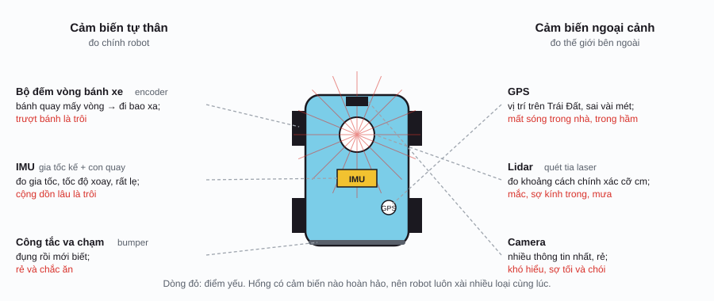
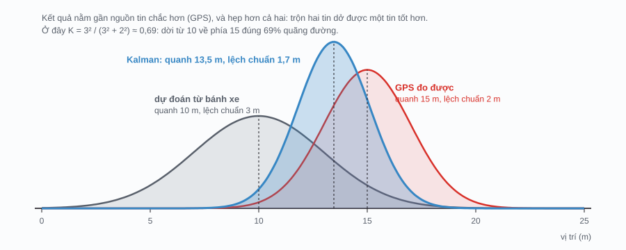
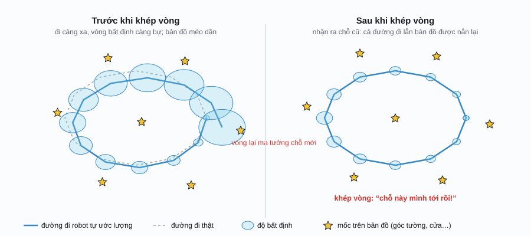

Robotics / Phần 3
Cảm biến và định vị
Ở Phần 2, vòng phản hồi nào cũng bắt đầu bằng chữ “đo”. Mà đo thì phải có cảm biến, và cảm biến nào cũng xạo một chút. Trang này kể chuyện robot trả lời câu hỏi tưởng dễ mà khó nhất: “tui đang ở đâu?”, bằng cách trộn nhiều nguồn tin dở thành một ước lượng tốt.
Robot cảm nhận thế giới bằng gì?
Cảm biến chia làm hai nhóm. Cảm biến tự thân (proprioceptive sensor) đo chính robot: bánh xe quay mấy vòng, khớp đang ở góc nào, thân đang nghiêng ra sao, giống cảm giác của bạn biết tay mình đang giơ lên mà hổng cần nhìn. Cảm biến ngoại cảnh (exteroceptive sensor) đo thế giới bên ngoài: vật cản cách bao xa, phía trước có gì, mình đang ở đâu trên Trái Đất.

Vài cái tên sẽ gặp hoài: bộ mã hóa vòng quay (encoder) đếm vòng quay của bánh xe hay động cơ; IMU (inertial measurement unit) là con chip nhỏ xíu có gia tốc kế và con quay hồi chuyển, y chang cái trong điện thoại giúp xoay màn hình; lidar bắn tia laser quét vòng quanh rồi đo thời gian ánh sáng dội về, ra khoảng cách tới mọi thứ xung quanh. Robot hút bụi đời mới có cái “nút tròn” trên lưng: đó chính là lidar.
Cảm biến nào cũng xạo một chút
Sai số của cảm biến có hai kiểu, và phân biệt được hai kiểu này là hiểu được nửa chương:
- Nhiễu (noise): mỗi lần đo lệch một chút, lúc dư lúc thiếu, hổng theo quy luật. GPS điện thoại là ví dụ: đứng yên mà chấm xanh trên bản đồ vẫn nhảy qua nhảy lại vài mét. Nhiễu thì lấy trung bình nhiều lần là bớt.
- Trôi (drift) hay độ lệch (bias): sai lệch về một phía, rồi cộng dồn theo thời gian. Bánh xe hơi mòn, đường kính nhỏ hơn thiết kế 4%: mỗi mét đi, robot tưởng mình đi 1,04 m. Đi 100 m là lệch 4 m, đi 1 km lệch 40 m. Lấy trung bình hổng cứu được.
Đoán vị trí chỉ bằng cách cộng dồn quãng đường từ bánh xe (hay IMU) gọi là dự đoán theo quán tính (dead reckoning), cách các thủy thủ ngày xưa xài khi chưa có GPS. Ngắn hạn thì mượt và chính xác, dài hạn thì trôi xa. GPS thì ngược lại: dài hạn hổng trôi, ngắn hạn nhảy lung tung, vô nhà hay vô hầm là mất. Hai nguồn tin dở theo hai kiểu ngược nhau. Câu hỏi là: trộn sao cho khéo?
Bộ lọc Kalman: trộn hai nguồn tin
Năm 1960, Rudolf Kálmán công bố cách trộn tối ưu khi mọi sai số đều có dạng quả chuông. Bộ lọc Kalman (Kalman filter) lặp đi lặp lại hai bước:
- Dự đoán: từ chỗ cũ, cộng thêm quãng đường bánh xe báo. Vì bánh xe hổng hoàn hảo, quả chuông phình ra một chút: càng lâu hổng có tin mới, càng mơ hồ.
- Cập nhật: khi có số đo GPS, kéo ước lượng về phía số đo. Kéo nhiều hay ít tùy coi bên nào chắc hơn. Sau khi trộn, quả chuông co lại.

x̂ (x mũ): vị trí ước lượng; P: độ mơ hồ của ước lượng (bình phương độ lệch chuẩn, gọi là phương sai); u: vận tốc bánh xe báo; Δt: thời gian một bước; Q: mỗi bước dự đoán thêm mơ hồ bao nhiêu, tức mình nghi ngờ bánh xe cỡ nào; z: số đo GPS; R: phương sai nhiễu GPS; K: hệ số Kalman (Kalman gain), nằm giữa 0 và 1. K gần 1 nghĩa là ước lượng đang mơ hồ hơn GPS nhiều, nên tin GPS; K gần 0 thì tin dự đoán.
Bộ lọc Kalman: bánh xe + GPS
Trộn hai nguồn tin dở thành một ước lượng tốtNhững điều có thể kiểm tra trên minh họa:
- Đường xám (chỉ bánh xe) trôi đều lên trên: đó là độ lệch 4%. Chấm đỏ (GPS) quanh quẩn số 0 mà nhảy dữ. Đường xanh (Kalman) vừa mượt vừa hổng trôi đi đâu, và sai số trung bình của nó nhỏ hơn cả hai.
- Bấm “Chạy vô hầm”: dải xanh phình ra từng chút (bước dự đoán làm P tăng), đường xanh bắt đầu trôi theo bánh xe. Ra khỏi hầm, gặp số đo GPS đầu tiên là dải co lại cái rụp: K lúc đó gần 1.
- Tăng nhiễu GPS lên 15 m: K nhỏ lại, bộ lọc bớt tin GPS, đường xanh mượt hơn nhưng phản ứng chậm hơn.
- Kéo Q về thật nhỏ: bộ lọc tưởng bánh xe hoàn hảo, nên bỏ ngoài tai GPS và trôi theo bánh xe luôn. Kéo Q thật lớn: nó nhảy theo GPS. Q đúng mức thì tốt nhất.
Bạn sẽ để ý đường xanh vẫn hơi lệch lên trên: bộ lọc một biến này hổng biết bánh xe lệch có hệ thống. Bộ lọc Kalman thật thường đưa luôn độ lệch của cảm biến vô làm một biến cần ước lượng, rồi tự học ra nó. Robot thật còn ước lượng cùng lúc vị trí, vận tốc, hướng, với các phiên bản như Kalman mở rộng (extended Kalman filter, EKF) cho chuyển động cong, phi tuyến.
Bộ lọc hạt: robot đi lạc tìm lại mình
Kalman giỏi khi mình đã biết đại khái mình ở đâu, chỉ cần tinh chỉnh. Nhưng thử tưởng tượng robot vừa được bật lên trong một tòa nhà có hai hành lang giống y nhau. Nó có thể ở hành lang A hoặc hành lang B. Một quả chuông đặt ở giữa hai hành lang (ngay trong vách tường!) là sai bét. Mình cần cách giữ nhiều giả thuyết cùng lúc.
Bộ lọc hạt (particle filter), hay định vị Monte Carlo (Monte Carlo localization), làm chuyện đó bằng sức đông: rải vài ngàn “hạt”, mỗi hạt là một lời đoán “robot đang đứng ở đây, quay mặt hướng này”. Rồi lặp ba bước:
- Dời: robot đi tới 35 phân thì mọi hạt cũng đi tới 35 phân theo hướng của chính nó, cộng thêm chút ngẫu nhiên vì bánh xe hổng chính xác.
- Chấm điểm: robot đo khoảng cách tới vách và đồ đạc. Với mỗi hạt, hỏi: “nếu robot đứng đúng chỗ hạt này, nhìn vô bản đồ thì đo ra mấy con số?”. Khớp với số đo thật thì điểm cao, lệch xa thì điểm thấp. Hạt nằm trong tường thì 0 điểm.
- Bốc lại: tạo đàn hạt mới bằng cách bốc ngẫu nhiên từ đàn cũ, hạt điểm cao dễ được bốc nhiều lần. Kết quả: hạt dồn về những chỗ hợp lý, chỗ vô lý bị bỏ.
Bộ lọc hạt: robot đi lạc tìm lại mình
Mỗi chấm xanh là một phỏng đoán “robot đang ở đây”Những điều có thể kiểm tra trên minh họa:
- Bấm “Đi 1 bước” từ từ: sau vài bước, hạt rút về vài cụm; sau vài chục bước, còn đúng một cụm quanh robot. Đây là lúc robot “biết” mình ở đâu.
- Bấm “Bắt cóc robot” khi các hạt đã tụ lại: robot bị nhấc qua chỗ khác mà hổng hay. Đàn hạt ban đầu chạy sai chỗ, nhưng nhờ 1% hạt được rải ngẫu nhiên mỗi bước, vài hạt rơi trúng chỗ mới, được điểm cao, rồi nhân bản lên. Bài toán này gọi là robot bị bắt cóc (kidnapped robot problem).
- Giảm số hạt xuống 100: hội tụ lẹ hơn nhưng dễ “chốt nhầm” chỗ sai. Tăng nhiễu cảm biến: hội tụ chậm hơn, cụm hạt rộng hơn.
SLAM: vừa vẽ bản đồ, vừa tìm mình trên bản đồ
Bộ lọc hạt ở trên được cho sẵn bản đồ. Còn robot hút bụi mới mua về nhà bạn thì chưa có. Muốn định vị phải có bản đồ; muốn vẽ bản đồ phải biết mình đang đứng đâu để ghi chỗ cái tủ cho đúng. Con gà và quả trứng. Bài toán làm cả hai cùng lúc gọi là SLAM (simultaneous localization and mapping).
Ý tưởng chính: robot ghi lại các mốc dễ nhận ra (góc tường, khung cửa, chân bàn) cùng với vị trí của chính nó, và giữ luôn độ mơ hồ của tất cả. Đi càng xa, sai số trôi càng tích lại, bản đồ méo dần. Cho tới khi robot quay về một chỗ cũ và nhận ra: “ủa, cái góc tường này mình thấy rồi!”. Khoảnh khắc đó gọi là khép vòng (loop closure): biết điểm cuối phải trùng điểm đầu, robot nắn lại toàn bộ đường đi và bản đồ cho khớp, độ mơ hồ co lại hết.

SLAM có mặt ở khắp nơi: robot hút bụi có lidar vẽ sơ đồ nhà bạn trên app; kính thực tế ảo và app đo đạc trên điện thoại dùng camera để biết điện thoại đang ở đâu trong phòng (gọi là SLAM thị giác); xe tự lái thì xài bản đồ vẽ sẵn cực kỳ chi tiết, rồi định vị trên đó bằng lidar và camera, chính xác tới cỡ chục phân.
Từ điển nhỏ
| Thuật ngữ | Tiếng Anh | Nói đơn giản |
|---|---|---|
| Cảm biến tự thân / ngoại cảnh | proprioceptive / exteroceptive sensor | Đo chính robot / đo thế giới bên ngoài. |
| Bộ mã hóa vòng quay | encoder | Đếm vòng quay của bánh xe hay trục động cơ. |
| IMU | inertial measurement unit | Chip đo gia tốc và tốc độ xoay. |
| Lidar | lidar (light detection and ranging) | Quét tia laser để đo khoảng cách tới mọi thứ xung quanh. |
| Nhiễu | noise | Sai lệch ngẫu nhiên mỗi lần đo. |
| Trôi, độ lệch | drift, bias | Sai lệch về một phía, cộng dồn theo thời gian. |
| Dự đoán theo quán tính | dead reckoning | Đoán vị trí bằng cách cộng dồn quãng đường đã đi. |
| Phân phối chuẩn | Gaussian distribution | Quả chuông tả “quanh giá trị này, lệch chừng này”. |
| Bộ lọc Kalman | Kalman filter | Trộn dự đoán và số đo, mỗi bên một quả chuông, thành ước lượng tốt nhất. |
| Hệ số Kalman | Kalman gain | Số từ 0 tới 1 quyết định tin số đo nhiều hay ít. |
| Bộ lọc hạt | particle filter | Giữ ngàn lời đoán cùng lúc, loại dần lời đoán sai. |
| Robot bị bắt cóc | kidnapped robot problem | Robot bị dời chỗ mà hổng hay; phải tự phát hiện và định vị lại. |
| SLAM | simultaneous localization and mapping | Vừa vẽ bản đồ vừa định vị trên bản đồ đó. |
| Khép vòng | loop closure | Nhận ra chỗ cũ, nhờ đó nắn lại cả bản đồ. |
Phụ lục: ký hiệu toán học
Ký hiệu toán học trên trang này. Cột giữa là cách đọc trong tài liệu tiếng Anh.
| Ký hiệu | Đọc (tiếng Anh) | Ý nghĩa, nói đơn giản |
|---|---|---|
| \(\hat x\) | x hat | Giá trị ước lượng của x (dấu mũ = “ước lượng”). |
| \(P\) | P | Phương sai của ước lượng: độ mơ hồ, bằng bình phương độ lệch chuẩn. |
| \(Q,\ R\) | Q, R | Phương sai nhiễu của bước dự đoán và của số đo. |
| \(K\) | Kalman gain | Hệ số Kalman, từ 0 tới 1. |
| \(z\) | z | Số đo từ cảm biến. |
| \(u\) | u | Đầu vào điều khiển, ở đây là vận tốc bánh xe báo. |
| \(\Delta t\) | delta t | Thời gian một bước. |
| \(\sigma\) | sigma | Độ lệch chuẩn; khoảng ±2σ chứa cỡ 95% khả năng. |
Lịch sử
- 1960
Bộ lọc Kalman
Rudolf Kálmán công bố bài báo về lọc tuyến tính. Ở NASA, nhóm của Stanley Schmidt nhanh chóng mở rộng nó cho bài toán phi tuyến và đưa vô máy tính dẫn đường của chương trình Apollo.
- 1978
Vệ tinh GPS đầu tiên
Mỹ phóng vệ tinh đầu tiên của hệ NAVSTAR GPS; hệ thống chạy đủ năm 1995. Từ tháng 5/2000, tín hiệu dân sự hết bị cố ý làm nhiễu, độ chính xác cải thiện hẳn.
- 1986
Bản đồ có xác suất
Randall Smith và Peter Cheeseman đề xuất giữ vị trí robot và vị trí các mốc chung trong một mô hình xác suất, nền móng của SLAM. Cái tên SLAM xuất hiện giữa thập niên 1990.
- 1998–99
Định vị Monte Carlo
Dellaert, Fox, Burgard và Thrun đưa bộ lọc hạt vô định vị robot. Robot hướng dẫn viên Minerva chạy giữa đám đông khách tham quan ở bảo tàng Smithsonian nhờ cách này.
- 2005
Stanley thắng DARPA
Xe tự lái Stanley của Đại học Stanford, nhóm do Sebastian Thrun dẫn dắt, thắng cuộc đua xuyên sa mạc DARPA Grand Challenge, mở màn cho ngành xe tự lái.
- 2007–15
SLAM thị giác
PTAM (Klein và Murray, 2007) rồi ORB-SLAM (Mur-Artal và cộng sự, 2015) cho thấy chỉ cần một camera là làm SLAM thời gian thực được, nền cho các app thực tế ảo tăng cường trên điện thoại.
Tài liệu tham khảo
- S. Thrun, W. Burgard, D. Fox, Probabilistic Robotics, MIT Press, 2005.
- R. E. Kalman, “A New Approach to Linear Filtering and Prediction Problems”, Journal of Basic Engineering 82(1), 1960.
- F. Dellaert, D. Fox, W. Burgard, S. Thrun, “Monte Carlo Localization for Mobile Robots”, ICRA 1999.
- H. Durrant-Whyte, T. Bailey, “Simultaneous Localization and Mapping: Part I”, IEEE Robotics & Automation Magazine, 2006.
- R. Mur-Artal, J. M. M. Montiel, J. D. Tardós, “ORB-SLAM: A Versatile and Accurate Monocular SLAM System”, IEEE Transactions on Robotics, 2015.
- R. R. Labbe, Kalman and Bayesian Filters in Python (sách miễn phí dạng notebook, giấy phép CC BY 4.0; dễ đọc cho người mới).